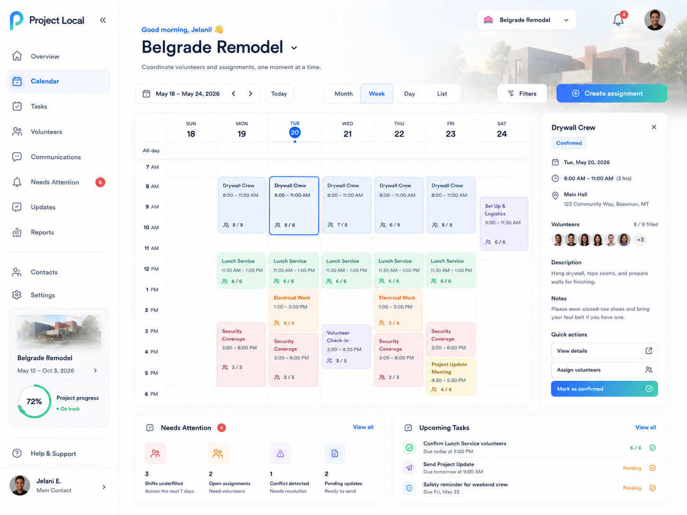

Desktop · 1440px
The established shell, four views, colors and actions remain recognizable. The proposal tightens spacing and introduces a compact status legend with named icons; Week event copy is more legible.
Mobile Month · 390px busy day
The existing Month cells truncate labels and hide remaining items behind “+3”. The proposed grid retains dates and category color while the selected-day agenda supplies readable times, titles, staffing and meal context.
Mobile Day, Week and List · 390px
Volunteer names remain visible in Day and List. A green check-circle, amber clock and red X-circle replace repeated response words, with a visible legend and accessible names. The extra-roster disclosure remains available.
Quick View · selected-day meals
The current key explains tiny B/L chips. The proposal puts Breakfast and Lunch headcounts before the calendar, labeled for the selected date, and distinguishes unrecorded, zero and positive counts. Meal contacts are shown only where already authorized; this visual fixture represents authenticated Quick View.
Narrow and enlarged text
The 320px proposal avoids clipped controls and horizontal overflow at simulated 200% zoom. The month grid and selected-day agenda remain scroll reachable. The three-destination extreme-size navigation preserves access through More.
Approved visual reference
The approved Calendar reference informs the restrained surface, type hierarchy, category colors and scheduling density. Its illustrative content is not treated as application data or promised functionality.
